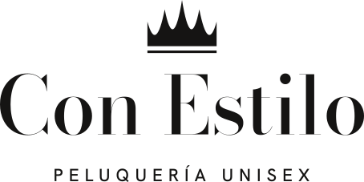
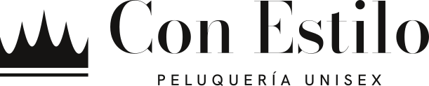

VerticalLogo
Tomé la corona del cartel y la redibujé con cinco puntas afiladas, valles curvos y una banda separada por una luz fina. El nombre usa una didona de moda en lugar de la letra manuscrita: a tamaño chico se lee mejor y se ve más actual. El texto está convertido a trazos, así que el SVG no depende de ninguna fuente instalada.
Vertical · negativo

Horizontal
Horizontal · negativoLogotipo · header

Isotipo · favicon y avatarPaleta
Sale del local: paredes blancas y muebles negros. Es monocromática, con grises cálidos para que no se sienta fría. El color lo van a poner las fotos de los trabajos, así que la interfaz no compite con los tonos de pelo.
Tinta
#151413Texto principal, botones, fondos oscuros. 16,6:1 sobre PapelGrafito
#2A2826Texto de párrafo, superficies oscuras secundarias. 13,3:1Piedra
#6B665FTexto secundario y etiquetas sobre claro. 5,1:1 (AA)Ceniza
#A39D94Texto secundario sobre oscuro (6,8:1). Solo decorativo sobre claroBruma
#DDD8D0Filetes, bordes y divisoresPapel
#F5F3EFFondo general del sitioBlanco
#FFFFFFTarjetas y bloques que se despegan del fondoTipografía
Son dos familias, las dos variables y libres, y se van a autoalojar solo con el subset latino. Bodoni Moda cambia su contraste según el tamaño (eje óptico), así que en títulos grandes los trazos finos se afinan y en tamaños chicos se engrosan para no desaparecer.
Aa Bb
Aa Bb
Display · 56Tu pelo, bien cuidado
Título · 36Color, corte y tratamientos
Subtítulo · 24Balayage y babylights
Texto · 17Cada servicio empieza con un diagnóstico: vemos cómo está tu pelo, qué querés lograr y qué le conviene. Texto de muestra, el definitivo lo redacta Carla.
Etiqueta · 12Peluquería unisex · Parque Horizonte
Botones y enlaces
Son rectos, sin radio y sin degradés. Al pasar el mouse, un relleno sube desde la base y la flecha avanza. En el celular no quedan estados de hover pegados, y al tocar el botón se achica apenas. Miden 52 px de alto. Pasá el mouse para probarlos.
Reglas que vamos a respetar
Forma
- Radio de borde cero en todo el sitio.
- Filetes de 1 px en Bruma en lugar de sombras.
- Nada de degradés ni brillos.
Texto
- Sin rayas largas en el texto visible.
- Sin frases infladas: se dice qué se hace y cómo.
- Sin itálicas decorativas ni palabras de otro color en los títulos.
Movimiento
- Una sola curva de salida suave para todo.
- Las apariciones mueven posición, nunca parten de invisible.
- Se respeta la opción de reducir movimiento.